Personen
Ansprechpersonen
Die Leitung des Amtes sowie die Leitungen aller Abteilungen, Sektionen und Stabsstellen.
Direktion
Stabsstellen
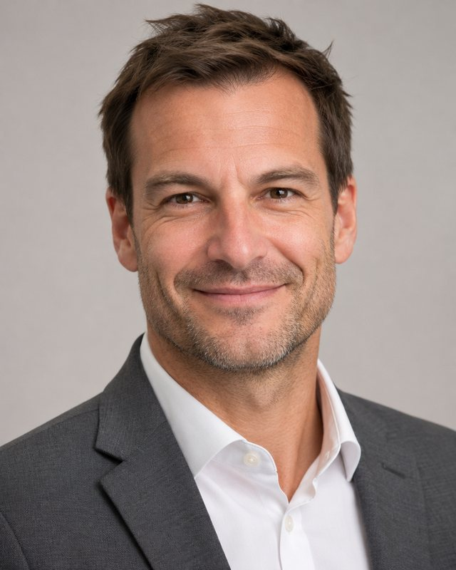
Abteilung R: Ressourcen
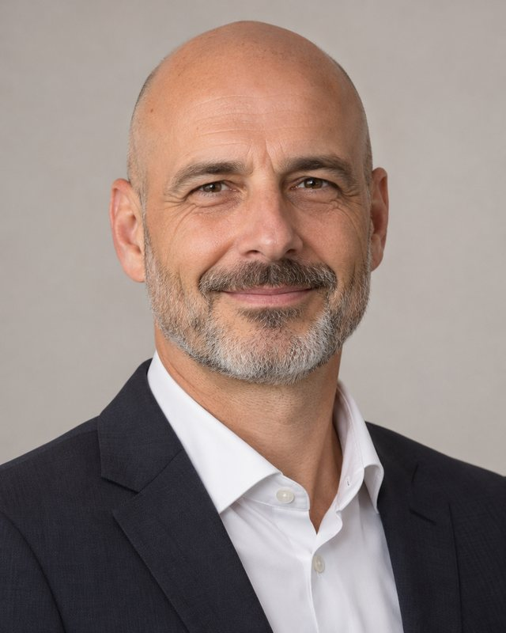
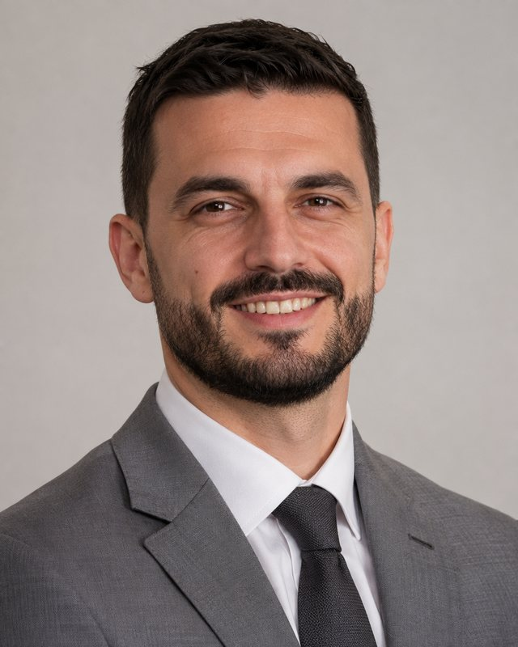
Abteilung G: Grundsätze und Konkordanz
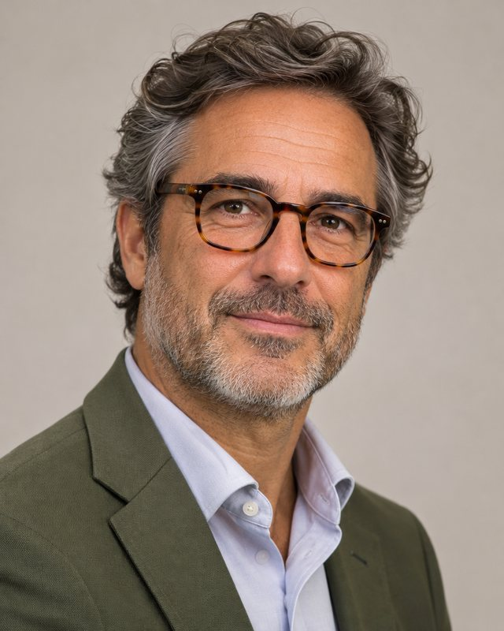
Dr. Andrea Bernasconi
Leiter Abteilung Grundsätze und Konkordanz
Abteilung G: Grundsätze und Konkordanz
Dr. Verena Steiner
Sektionschefin Grundsatzfragen der Besonderheit
Sektion G1: Grundsatzfragen der Besonderheit
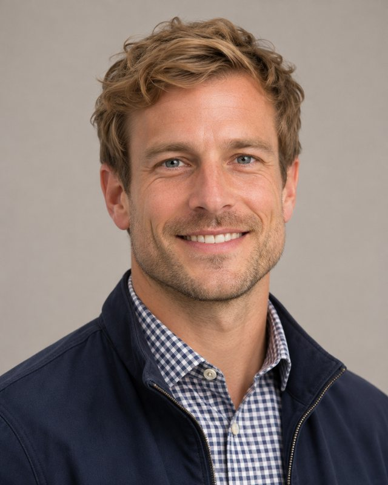

Stéphanie Roduit
Sektionschefin Konkordanz und Kompromissfindung
Sektion G3: Konkordanz und Kompromissfindung
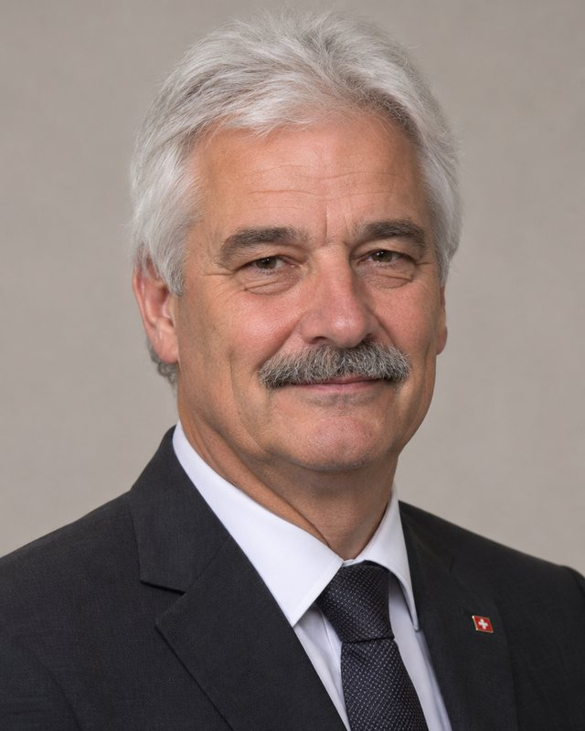
Abteilung V: Verfahren und Vernehmlassungen
Prof. Dr. Christine Rochat
Leiterin Abteilung Verfahren und Vernehmlassungen
Abteilung V: Verfahren und Vernehmlassungen
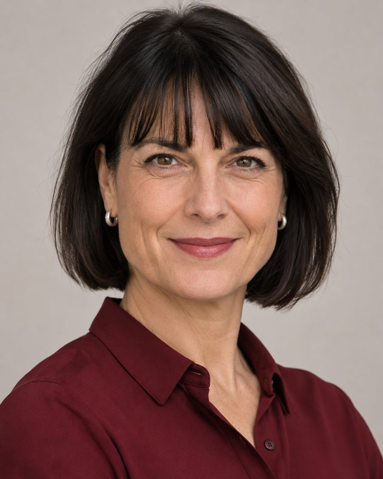
Abteilung E: Ausserordentliche Ereignisse
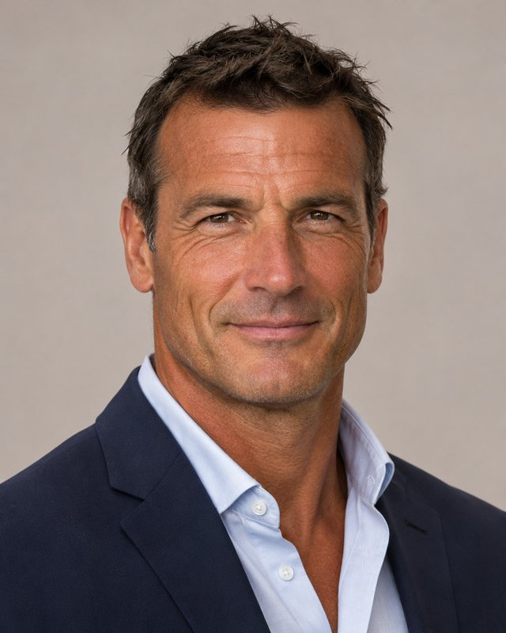
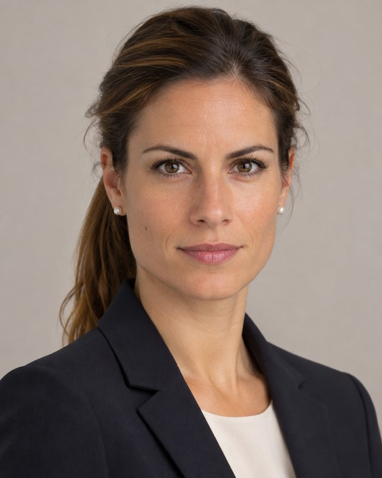
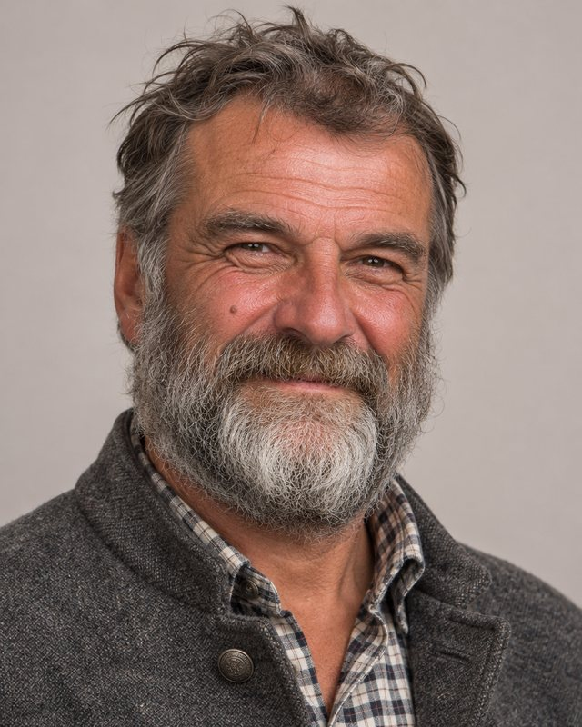
Mai Nguyen
Sektionschefin Prävention des Unwahrscheinlichen
Sektion E4: Prävention des Unwahrscheinlichen
Abteilung D: Digitales und Register
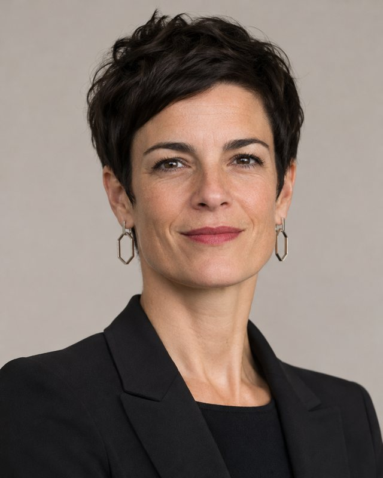
Dr. Simon Gerber
Sektionschef ERbA (Registerführer)
Sektion D1: Eidgenössisches Register besonderer Angelegenheiten (ERbA)
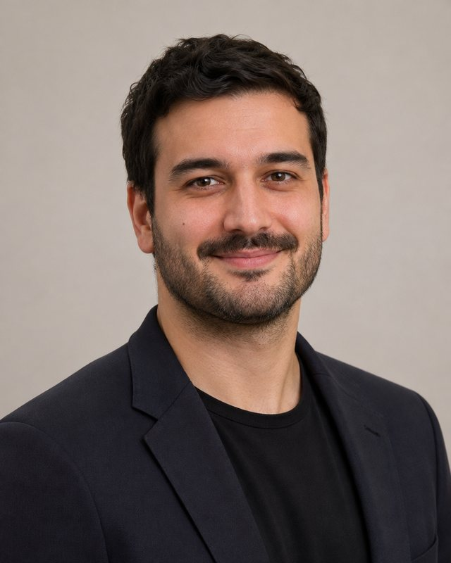
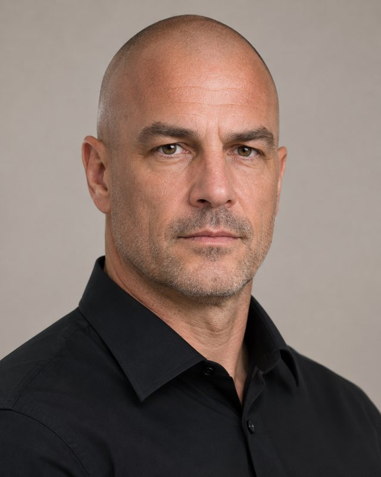